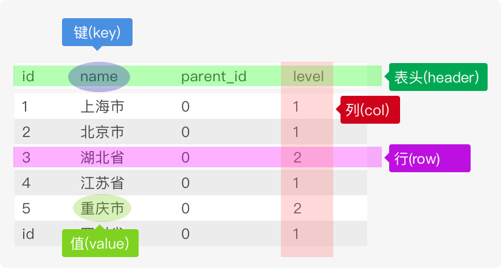

数据库基础
数据库(Database，DB)是按照数据结构来组织、存储和管理数据的建立在计算机存储设备上的仓库。
简单来说是本身可视为电子化的文件柜——存储电子文件的处所，用户可以对文件中的数据进行新增、截取、更新、删除等操作。数据管理不再仅仅是存储和管理数据，而转变成用户所需要的各种数据管理的方式。数据库有很多种类型，从最简单的存储有各种数据的表格到能够进行海量数据存储的大型数据库系统都在各个方面得到了广泛的应用。
什么是数据库
人们通常用数据库这个术语来代表他们使用的数据库软件。这是不正确的，它是引起混淆的根源。确切地说，数据库软件应称为
DBMS(数据库管理系统)。数据库是通过DBMS创建和操纵的容器。数据库可以是保存在硬设备上的文件，但也可以不是。在很大程度上说，数据库究竟是文件还是别的什么东西并不重要，因为你并不直接访问数据库；你使用的是DBMS，它替你访问数据库。
数据库指的是以一定方式储存在一起、能为多个用户共享、具有尽可能小的冗余度、与应用程序彼此独立的数据集合。简单来说可视为电子化的文件柜——存储电子文件的处所，用户可以对文件中的数据运行新增、截取、更新、删除等操作。
RDBMS即关系数据库管理系统(Relational Database Management System)的特点：
- 数据以表格的形式出现
- 每行为各种记录名称
- 每列为记录名称所对应的数据域
- 许多的行和列组成一张表单
- 若干的表单组成database
数据库分类
数据库的分类可多了去了，在维基百科上面有下面这些数据库，并粗略的分了个类别。一看这里面的学问大了去了，还是先搬一些代表性的吧，长长见识，要深入了解各种概念推荐看《数据库系统概论》。
关系数据库
（英语：Relational database），是创建在关系模型基础上的数据库，借助于集合代数等数学概念和方法来处理数据库中的数据。现实世界中的各种实体以及实体之间的各种联系均用关系模型来表示。关系模型是由埃德加·科德于1970年首先提出的，并配合“科德十二定律”。现如今虽然对此模型有一些批评意见，但它还是数据存储的传统标准。标准数据查询语言SQL就是一种基于关系数据库的语言，这种语言执行对关系数据库中数据的检索和操作。
- MySQL
- MariaDB（MySQL的代替品，英文维基百科从MySQL转向MariaDB）
- Percona Server（MySQL的代替品）
- PostgreSQL
- Microsoft Access
- Google Fusion Tables
- SQL Server
- FileMaker
- Oracle
- Sybase
- dBASE
- Clipper
- FoxPro
几乎所有的数据库管理系统都配备了一个开放式数据库连接（ODBC）驱动程序，令各个数据库之间得以互相集成。
非关系型数据库（NoSQL）
NoSQL一词最早出现于1998年，是Carlo Strozzi开发的一个轻量、开源、不提供SQL功能的关系数据库。当代典型的关系数据库在一些数据敏感的应用中表现了糟糕的性能，例如为巨量文档创建索引、高流量网站的网页服务，以及发送流式媒体。关系型数据库的典型实现主要被调整用于执行规模小而读写频繁，或者大批量极少写访问的事务。
Key/value最终一致性存储
- Apache Cassandra（为Facebook所使用）：高度可扩展
- Dynamo
- Hibari
- Project Voldemort
- Riak
Key/value硬盘存储
- LevelDB（Google）
- BigTable
- MemcacheDB
- Tokyo Cabinet
- Tuple space
- TreapDB
Key/value RAM存储
- Oracle Coherence
- memcached
- Citrusleaf database
- Velocity
- Redis
- Tuple space
Key/value基于Paxos算法的存储
- Keyspace
数据库模型
数据库模型描述了在数据库中结构化和操纵数据的方法，模型的结构部分规定了数据如何被描述（例如树、表等）。数据库模型的分类如下：
- 对象模型
- 层次模型（轻量级数据访问协议）
- 网状模型（大型数据储存）
- 关系模型
- 面向对象模型
- 半结构化模型
- 平面模型（表格模型，一般在形式上是一个二维数组。如表格模型数据Excel)
架构
数据库的架构可以大致区分为三个概括层次：内层、概念层和外层。
- 内层：最接近实际存储体，亦即有关数据的实际存储方式。
- 外层：最接近用户，即有关个别用户观看数据的方式。
- 概念层：介于两者之间的间接层。
数据库索引
数据索引的观念由来已久，像是一本书前面几页都有目录，目录也算是索引的一种，只是它的分类较广，例如车牌、身份证字号、条码等，都是一个索引的号码，当我们看到号码时，可以从号码中看出其中的端倪，若是要找的人、车或物品，也只要提供相关的号码，即可迅速查到正确的人事物。
数据库操作：事务
事务（transaction）是用户定义的一个数据库操作序列，这些操作要么全做，要么全不做，是一个不可分区的工作单位。
数据表
关系数据库没有数据表，关键字、主键、索引等也就无从谈起，数据表是关系数据库中一个非常重要的对象，是其它对象的基础，也是一系列二维数组的集合，用来存储、操作数据的逻辑结构。根据信息的分类情况。一个数据库中可能包含若干个数据表，每张表是由行和列组成，记录一条数据数据表就增加一行，每一列是由字段名和字段数据集合组成，列被称之为字段，每一列还有自己的多个属性，例如是否允许为空、默认值、长度、类型、存储编码、注释等

数据类型
在定义数据字段的类型对你的数据库的优化非常重要，数据类型决定了数据在计算机中的存储格式，代表不同的信息类型，大致可以分为：数值、日期/时间和字符串(字符)类型，字符串类型又包括二进制类型。
上图中每一列就是一个字段，每个字段都有自己的类型，例如name列为字符串类型，level 列为数字类型。
关系键
关系键是关系数据库的重要组成部分。关系键是一个表中的一个或几个属性，用来标识该表的每一行或与另一个表产生联系。一列(或一组列)，其值能够唯一区分表中每个行。
主键
主键（primary key或unique key），又称主码，数据库表中对储存数据对象予以唯一和完整标识的数据列或属性的组合。一个数据列只能有一个主键，且主键的取值不能缺失，即不能为空值（Null）。unique 可空，可以在一个表里的一个或多个字段定义；primary key 不可空不可重复，在一个表里可以定义联合主键；unique索引和primary索引区别:
- primary key = unique + not null
- 唯一约束和主键一样都是约束的范畴，而且都可以作为外键的参考，不同的是，一张表只能有一个主键
- 主键和唯一约束的创建需要依靠索引，如果在创建主键或唯一约束的时候没有已经建好的索引可以使用的话，Oracle会自动建立一个唯一的索引。
表中的任何列都可以作为主键，只要它满足以下条件:
- unique 就是唯一，当你需要限定你的某个表字段每个值都唯一，没有重复值时使用。
- 任意两行都不具有相同的主键值；
- 每个行都必须具有一个主键值(主键列不允许NULL值)。
除MySQL强制实施的规则外，应该坚持的几个普遍认可的最好习惯为:
- 不更新主键列中的值；
- 不重用主键列的值；
- 不在主键列中使用可能会更改的值。(例如，如果使用一个名字作为主键以标识某个供应商，当该供应商合并和更改其名字时，必须更改这个主键。)
超键
超键（superkey），有的文献称“超码”，是在数据库关系模式设计中能够唯一标示多元组（即“行”）的属性集。包含所有属性的集叫做明显（平凡）超键。
候选键
在关系模型中，候选键或候选码（candidate key）是某个关系变量的一组属性所组成的集合，它需要同时满足下列两个条件：
- 这个属性集合始终能够确保在关系中能唯一标识元组
- 在这个属性集合中找不出真子集能够满足条件
满足第一个条件的属性集合称为超键，因此我们也可以把候选键定义为“最小超键”，也就是不含有多余属性的超键。
候选键的重要性是它们能够在关系中唯一标识出不同的元组，因此超键也是在设计数据库模式时需要指定的最重要的约束之一。由于在关系模型中，每个关系都是一个集合（没有重复的元素），所以每个关系都至少有一个候选键（因为所有属性组合必然是个超键）。但是在某些关系型数据库中表也能代表多重集，所以在每个关系中都显式地定义至少一个候选键是一条很重要的设计原则。数据库管理系统通常都需要将每个关系中的某个候选键定义为主键，亦即这个候选键是区分不同元组时首选的识别方式，例如外键通常就是引用主键而非其他候选键。
外键
外键（foreign key，台湾译作外来键），又称外部键。其实在关系数据库中，每个数据表都是由关系来连系彼此的关系，父数据表（Parent Entity）的主键（primary key）会放在另一个数据表，当做属性以创建彼此的关系，而这个属性就是外键。
比如，学生跟老师之间是教学的关系，学生数据表会有个属性叫指导老师（FK），而这个值就是对应到老师数据表的老师代号（PK），学生的指导老师就是外键。
代理键
在关系型数据库设计中，代理键是在当数据表中的候选键都不适合当主键时，例如数据太长，或是意义层面太多，就会请一个无意义的但唯一的字段来代为作主键。
代理键是：
- Surrogate (1) – Hall, Owlett and Codd (1976) 一个代理键值确定了外部世界的一个实体。代理键值是数据库生成的，从来不显示给用户或应用程序看。
- Surrogate (2) – Wieringa and De Jonge (1991) 一个代理键值确定了数据库中的一个对象。代理键值是数据库生成的，用户或应用程序看不到它。
在实践中，代理键值通常是个自动递增的数字。在Sybase或SQL Server，用identity column标识代理键，PostgreSQL里用serial，Oracle里用SEQUENCE，在MySQL里用一个标记有AUTO_INCREMENT的字段。
自然键
自然键与代理键相反，它是在自然生活中唯一确定一个事物的标识。身份证号就是一个自然键，用于确定一个人。